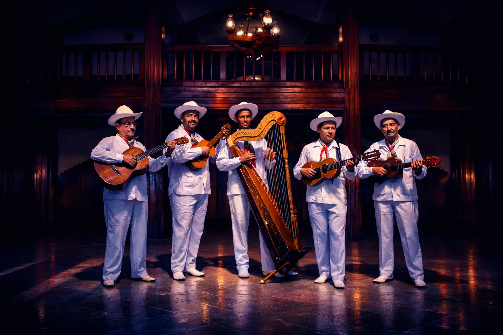
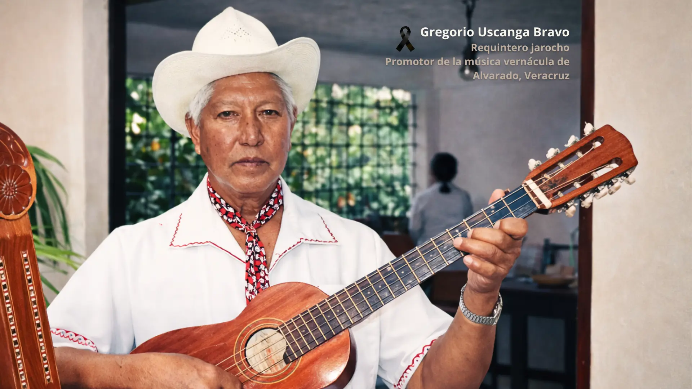
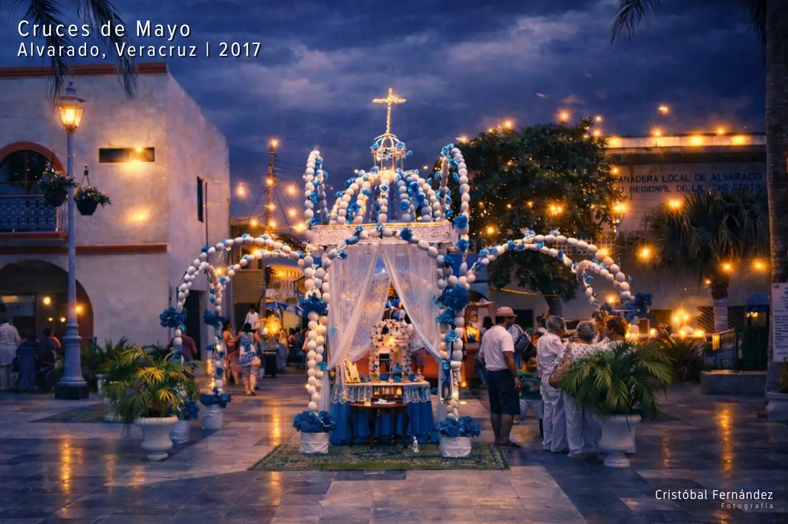
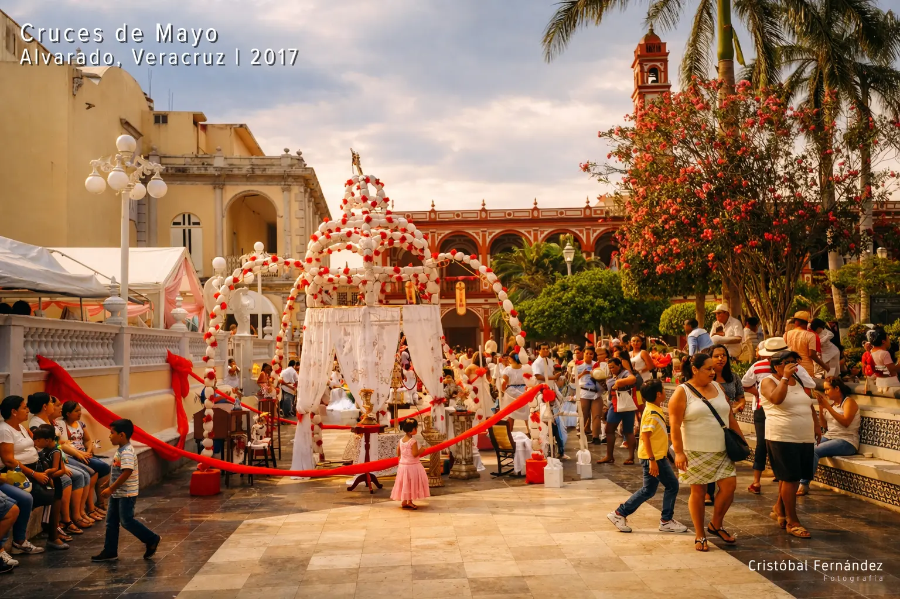
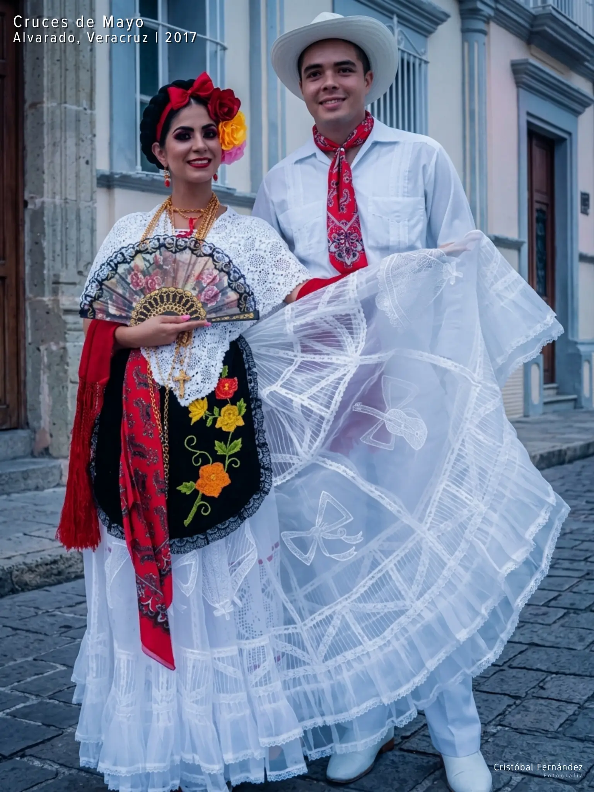
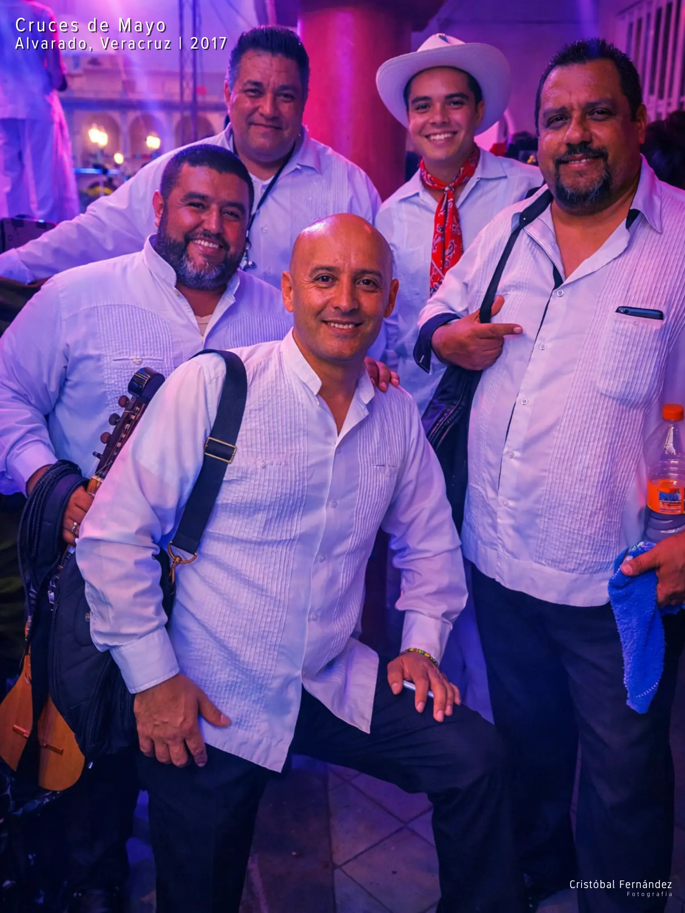
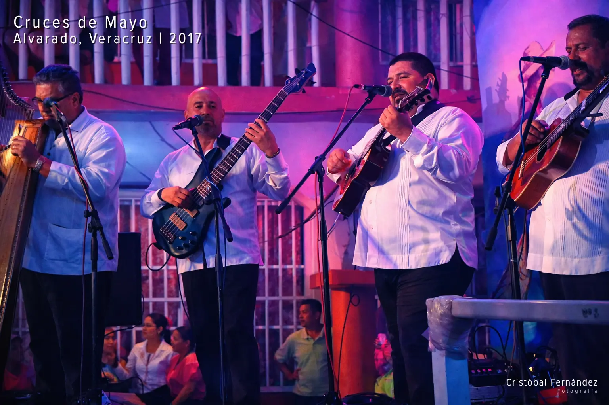
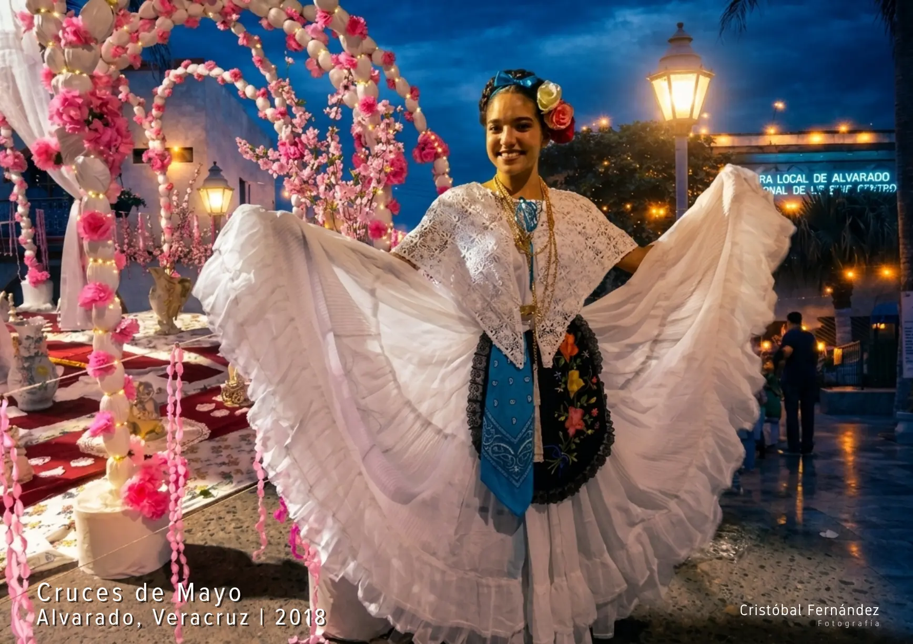
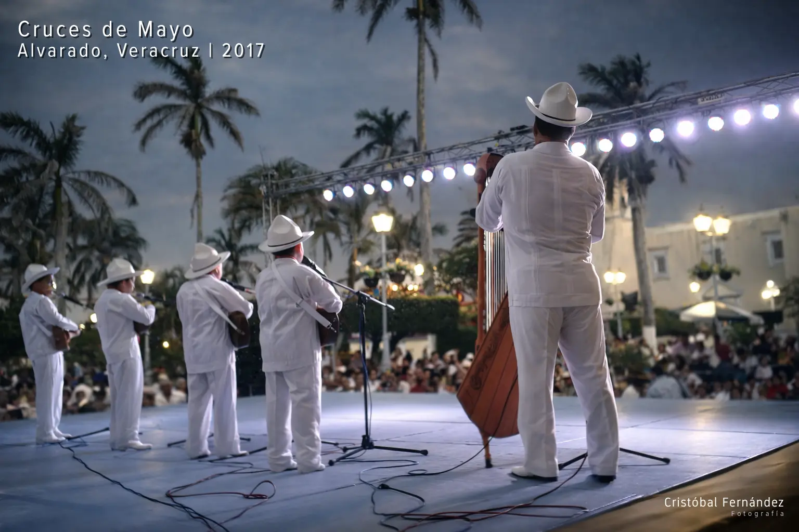
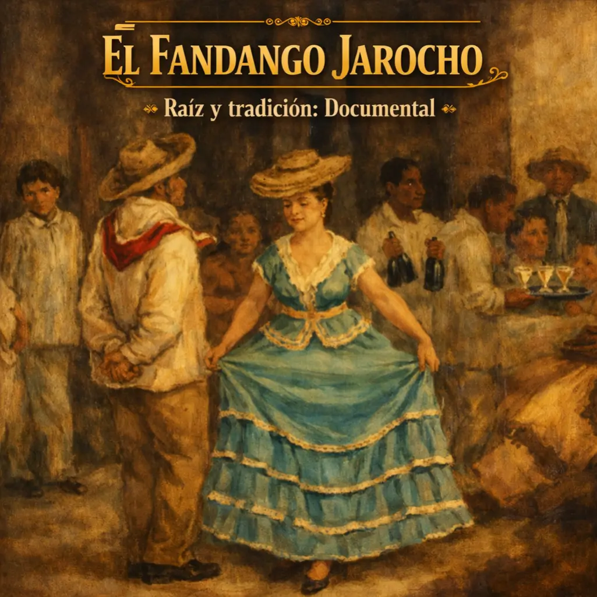

Son Zapateado
Zapateado y Fandango Veracruzano
Ritmo, tradición y cultura en movimiento.
Compartimos tradición
Este es un espacio dedicado al Zapateado y Fandango Veracruzano, donde el zapateado tradicional del Sotavento y el fandango antiguo cobran vida. Aquí exploramos la técnica, la musicalidad y el acompañamiento con jarana, cultivando la conexión y la memoria que definen a esta tradición. corporal y la energía del fandango.

Galería de Tradición








Video Destacado

El Fandango Jarocho
Raíz y Tradición: Documental
Documental etnográfico sobre la historia del fandango jarocho y su raíz africana. Explora la
música y el baile como ejes de cohesión en Veracruz.
Producción realizada en colaboración por:
Gobierno del Estado de Tabasco
Instituto Veracruzano de la Cultura (IVEC)
Instituto Estatal de Cultura de Tabasco (IEC)
Consejo Nacional para la Cultura y las Artes (CONACULTA)
Tierra: Tiempo y Contratiempo
Programa de Desarrollo Cultural del Sotavento
Explorador Cultural de Veracruz
Interactúa con los puntos destacados en el mapa para descubrir la esencia de cada región.
Explora los puntos
en el mapa
Talleres en Curso
Zapateado Jarocho | Sotavento
Nivel: Principiantes | Inicial
Horario: Domingos 10:00 - 12:00 h
Lugar: Teatro Valentina | Tijuana, Baja California
Próximos Talleres
Zapateado Jarocho | Sotavento
Nivel: Principiantes | Inicial
Fecha estimada: Julio 2026
Quiero enterarme¿Dudas? Escríbenos
Reserva tu espacio ¡Cupo Limitado!
Escanea el código o haz clic en el botón para completar tu registro oficial.